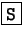
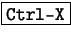

Next: Carpetas
Up: Pine
Previous: Pine
Índice General
Al seleccionar Setup, o al pulsar la tecla , el
programa da al usuario una lista de ítems que pueden ser configurados,
los mas importantes, y los que se verán en este curso son dos:
Config y Signature, para el resto se invita al
alumno a leer la documentación del programa.
Primero lo mas simple, al seleccionar la opción Signature,
pine provee al usuario de un editor (el mismo editor que se
utilizará para componer mensajes) para poder crear una firma que luego
se agregará a cada mensaje que se escriba. Por favor recordar lo que
se dijo en la sección 3.1, no es conveniente
una firma muy grande, manteniendola de 4 o 5 líneas no habrá
problemas. Como se indica en el menú de esta sección, para salir, se
debe pulsar ; el programa preguntará si se quiere
guardar los cambios.
La sección Config (que se accede mendiante la tecla
 ), presenta al usuario una enorme lista de opciones para
configurar cada aspecto del comportamiento del programa, la mayoría de
las opciones por defecto que trae configuradas el pine están
correctas, pero se nombrarán aquellas opciones que conviene cambiar.
), presenta al usuario una enorme lista de opciones para
configurar cada aspecto del comportamiento del programa, la mayoría de
las opciones por defecto que trae configuradas el pine están
correctas, pero se nombrarán aquellas opciones que conviene cambiar.
- personal-name
- Por defecto el programa utiliza el nombre que el
usuario tiene configurado en el sistema, en el caso de que el nombre
del usuario no esté correcto, se puede editar esta línea y corregir
el error. En aquellos campos donde el pine no tenga ningún
valor, se verá una etiqueta diciendo No Value Set, cuando
el programa asigna un valor por defecto a un campo no configurado,
además agregará el valor por defecto.
- user-domain
- El pine por defecto trata de averiguar
qué dominio tiene configurado el equipo donde está ejecutandose,
para utilizarlo en la dirección de origen en los mensajes que el
usuario escriba. En algunos casos3.4, el dominio de la dirección de correo del usuario
no coincidirá con el dominio del equipo local, entonces es
conveniente configurar este valor para que la dirección origen en
los mensajes que se escriban, salgan correctamente.
- smtp-server
- Si se tiene un servidor de correo configurado en el
equipo local, no se debería ingresar ningún valor en este campo, ya
que el programa por defecto utilizará el servidor local como
servidor de correo saliente. Puede darse el caso que en el equipo
local no se encuentre un servidor de correo configurado, entonces
hay dos opciones: si el equipo es propio, es muy conveniente
instalar un servidor de correo local, pero si el equipo lo
administra otra persona, habrá que consultar con ésta para averiguar
el valor a ingresar en este campo.
- character-set
- Con esta opción se configura el conjunto de
caracteres que utilizará el programa al mostrar y escribir mensajes.
Por defecto, el pine utiliza el valor US-ASCII,
que corresponde al conjunto de caracteres que se utilizan en los
Estados Unidos de Norteamérica. Al tener un lenguaje mas rico,
debemos avisarle al programa que se necesitará soporte para nuestro
conjunto de caractares, para lograr esto, se debe ingresar
iso-8859-1 en ese campo y con esto se tendrá soporte para
los acentos, las eñes, y demás caracteres extendidos.
Hay muchas otras opciones que se pueden cambiar, pero como se ha dicho
antes, no son de tanta importancia como las nombradas anteriormente.
El usuario puede siempre pulsar la tecla  para pedir ayuda
acerca de cualquier opción de configuración.
para pedir ayuda
acerca de cualquier opción de configuración.
Para salir de la sección de configuración, como dice en el menú, se
debe pulsar  , el programa preguntará si se quieren guardar
los cambios.
, el programa preguntará si se quieren guardar
los cambios.
Next: Carpetas
Up: Pine
Previous: Pine
Índice General
Proyecto Cursos - LuCAS - http://lucas.hispalinux.es/htmls/cursos.html